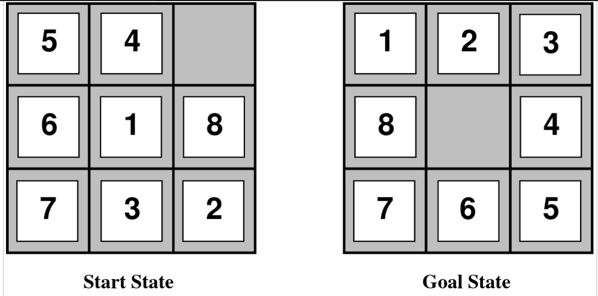

Problema do 8-Puzzle
Considere o problema dos 8-puzzle discutido em sala de aula. Implemente uma solução para este problema.

Implemente um agente autônomo que consegue resolver este problema. Você deve adotar uma matriz como forma de representação dos estados. Por exemplo, o estado inicial indicado acima deve ser representado da seguinte forma:
[[5,4,0],[6,1,8],[7,3,2]]
ou seja, o espaço em branco deve ser representado por um zero. O estado final apresentado acima deve ser representado da seguinte forma:
[[1,2,3],[8,0,4],[7,6,5]]
As operações que o agente sabe fazer são:
cima: o agente move o espaço em branco para cima;baixo: o agente move o espaço em branco para baixo;esquerda: o agente move o espaço em branco para a esquerda, e;direita: o agente move o espaço em branco para a direita.
Considerando a forma como os estados são representados e as ações que o agente sabe executar, responda as seguintes perguntas:
- Qual a estimativa do tamanho do espaço de busca (número de estados possíveis)?
- Que algoritmo de busca pode ser utilizado para resolver este problema considerando que a solução apresentada precisa ser ótima?
A entrega da sua implementação deverá ter 1 arquivo chamado Puzzle8.py que implementa a interface State e que deve passar por TODOS os testes especificados em test_8_puzzle.py.
O seu agente deve ser capaz de identificar um plano para todos os estados iniciais descritos como fáceis e difícieis no arquivo de testes. Para os estados descritos como impossível o agente precisa retornar a mensagem "Nao achou solucao". Deve-se considerar o estado goal em formato caracol, como apresentado abaixo:
| 1 | 2 | 3 |
|---|---|---|
| 8 | 4 | |
| 7 | 6 | 5 |
Ao implementar o método successors do seu agente considere a seguinte ordem para adicionar os nodos em abertos: cima, baixo, esquerda e direita.
Formato de entrega
-
Para a implementação e entrega deste exercício nós vamos utilizar o Github Classroom.
-
O link para o enunciado é este aqui https://classroom.github.com/a/exG0xESK. Através deste link você consegue baixar o repositório e começar a sua codificação.
-
Prazo para a entrega: 13/09/2022 (sexta-feira) até às 23:50 horas.
-
Este trabalho pode ser feito em equipes com até 3 integrantes.
Exemplo de código para o método show_path
def show_path(self):
algorithm = AEstrela()
if not Puzzle8.tem_solucao(self.tabuleiro):
return 'Nao tem solucao'
result = algorithm.search(self)
if result != None:
return result.show_path()
else:
return 'Nao achou solucao'
Detalhe importante sobre o método tem_solucao: uma forma para cálculo se uma determinada configuração tem solução ou não é seguir a seguinte regra: deve-se calcular a quantidade de inversões necessárias para ordenar certa sequência numérica, determinado por Possível a quantidade de inversões pares e Impossível a quantidade de inversões ímpares.
Uma possível solução 
Abaixo são apresentados os links para uma possível solução e para o arquivo de testes utilizado na validação das submissões:
Percebam que a implementação do Puzzle8.py faz uso ao algoritmo A* com poda. Além disso, foram implementadas duas heurísticas: a soma da distância de Manhattan e a soma de peças fora do lugar.
Sugiro que vocês utilizem o arquivo de testes para validar a implementação de vocês. Além disso, sugiro também mudar as heurísticas implementadas para verificar se a solução encontrada é a mesma.
Para executar os testes, sugiro executar o seguinte comando:
pytest -v -s
No diretório onde se encontram os arquivos de teste e da implementação da solução.